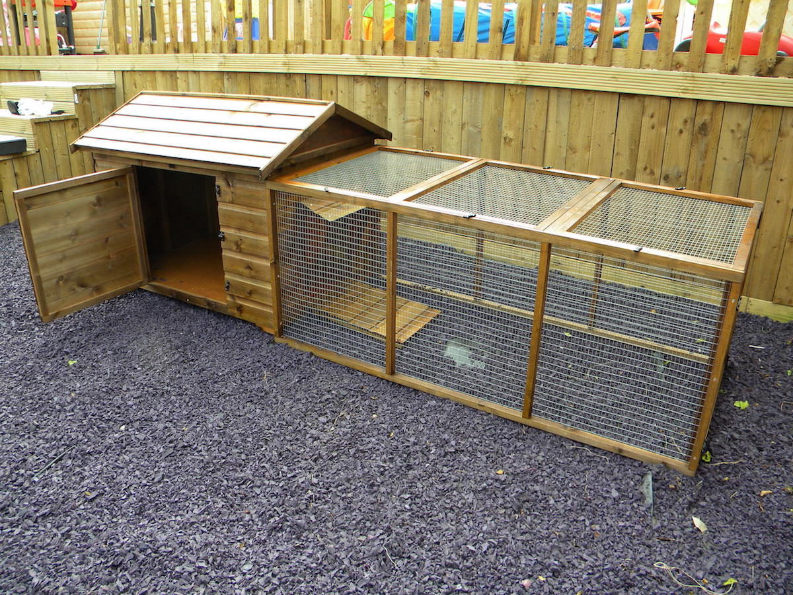

Качки

Вирощування та розведення качок: заробляємо на птиці
Людиною одомашнені досить багато видів птахів. Процвітає розведення курей, качок, гусей, індичок і безлічі інших. Ці тварини – не тільки смачне м’ясо, а й цінний пух і пір’я, а також поживні яйця. Як правило, вирощуванням домашньої птиці займаються фермерські господарства, а у величезних масштабах – птахофабрики. Але навіть у будь-якого підприємця є можливість зайнятися цим досить прибутковим і по-своєму цікавим бізнесом, і сьогодні ми розглянемо можливість започаткувати власну справу, із розведення та вирощування качок, а також подальшу реалізацію качиного м’яса.
Організаційні питання
Якщо ви хочете вести фермерське господарство по розведенню качок, то насамперед варто зареєструватись як суб’єкт підприємницької діяльності. Тут у вас є вибір, зареєструвати фермерське господарство або просто стати фізичною особою-підприємцем.
Крім реєстрації підприємницької діяльності, незабаром вам знадобляться постійні дозволи від ветеринарної служби, і є сенс на самому початку дізнатися всі вимоги. За законом, ви можете розводити птицю без жодних обмежень, але її забій і реалізація м’ясних тушок повинні бути юридично оформлені. Так, ветеринарне свідоцтво ви отримаєте тільки в тому випадку, якщо співробітник цього відомства точно знає, що забій птиці проходив згідно всім встановленим вимогам, попередньо перевіривши приготованих тварин. Навіть після того, як останній птах перетворився на готове до продажу м’ясо, ветеринар повинен буде перевірити і його, а видати довідку дозволить лише місцева ветеринарна станція. Потім м’ясо буде передано в лабораторію, в якій, у разі відсутності порушень, вам вже, нарешті, видадуть дозвіл на торгівлю.
Вибір місця для розведення качок
Повноцінний бізнес передбачає не тільки юридичне оформлення, а й достатньо великі площі, як у нашому випадку, для вирощування качок.
Взагалі качка – птах невибагливий, їжею не перебирає, та й якихось особливих умов утримання не вимагає. Але, будучи істотою водоплавною, дуже любить усілякі водойми. Та й простір їй теж потрібен, щоб не ходити юрбою, сердито крякаючи на одноплемінників. Ідеально, якщо у вас є свій будинок з прилеглими декількома арами землі, яка має доступ до, наприклад, річки або озера – качки в таких умовах будуть почувати себе найбільш комфортно. Якщо ж вдома немає, то, звичайно, можна його орендувати де-небудь в селі біля вашого міста, але врахуйте, що туди доведеться переїхати мало не на постійне проживання. Однак, розведенням птиці займаються, як правило, саме сільські жителі, а підприємці з великих міст не готові кинути життя в мегаполісі. Займатися сільським господарством найкраще безпосередньо на своїй власній ділянці.
Щоб забезпечити качкам щасливе життя перед забоєм, територію для них варто повноцінно облагородити. Насамперед потрібно захистити хоча б сіткою площу для їх прогулянок, якщо є водоймище з виходом у відкрите плавання, то подбати і про його обмеження, натягнувши сітку і над водою. Пірнати качки не стануть, але з метою безпеки та запобігання їх вільного дрейфу рекомендується поставити загорожу і хоча б на півтора метра під товщею води, в ідеалі – закріпити на дні. За таку серйозну турботу про них вони будуть почувати себе чудово і рідше хворіти, добре набираючи масу тіла.
Обладнання для вирощування качок
Крім прогулянкової території, над якою не завадило б поставити навіс, потрібні будуть два пташника – для молодняка і племінних качок.
Ще до цього додайте покупку інкубатора, (не варто забувати, що вкрай нерентабельно, розводячи птицю, не реалізовувати і її яйця), морозильного обладнання та машини для ощупування пір’я. Остання потрібна не просто для видалення пуху і пір’я із тушок, але й для збору цих матеріалів з розрахунком на подальший продаж.
Пташники ж можна спорудити самому, головною вимогою до них буде відсутність щілин, адже птиці повинні жити в теплому приміщенні без протягів. Щоб пернаті не мерзли і під час зимових морозів, варто встановити по обігрівачу в кожен пташиний будинок, а також в холодну пору року встеляти підлогу підстилкою. При цьому будувати сідала в пташниках не потрібно – своє коротке життя одомашнені качки проводять на землі, не підіймаючись на піднесення подібно куркам. Вартість будматеріалів немає сенсу враховувати, так як пташники зводяться з підручних дощок, колод та інших подібних предметів, які завжди удосталь є на приватних територіях. Втім, якщо теслярська справа зовсім вам не дається, можна і попросити спорудити приміщення для птахів того, хто розбирається в цьому краще.
Не варто забувати про годівниці і систему напування, але й вони без великих затрат виготовляються власними руками. Отже, для зведення самого пташиного містечка потрібно зовсім не багато, на обігрівачі та підстилки, але покупка всього обладнання потребують більш істотних витрат. В перспективі, ми отримаємо готовий майданчик для вирощування пташенят, підростання каченят, забою дорослих особин і зберігання м’яса та яєць.

Основні нюанси розведення та вирощування качок
У перспективі рекомендується вирощувати пташенят цілком самостійно, не закуповуючи щораз нових качок і просто доводячи їх до потрібного віку, щоб забити. Тобто бізнес передбачає повноцінне розведення, де змінюються покоління за поколінням, отримані від перших селезнів і качок, а не своєрідний розплідник з постійною закупівлею нових каченят. Для розведення качок рекомендується пекінська порода, ці птахи дорослішають за 2 місяці, що дозволяє отримувати нову партію м’яса в середньому раз на 60 днів, а також вони відрізняються високою швидкістю знесення яєць – до 140 яєць на рік з однієї качки. Недоліком цієї породи є те, що особини дуже погано висиджують яйця, тому для максимальної продуктивності можна купувати представниць інших порід, наприклад, Руанської. Потім з цією проблемою буде справлятися інкубатор. Перших каченят потрібно близько 300 штук, а також 13 дорослих особин, які стануть майбутніми батьками з розрахунку 3 селезня на 10 качок – цього буде достатньо, щоб надалі вони активно приносили потомство. Пекінська порода починає нести яйця у віці 30 тижнів, репродуктивний вік триває до 2-х років, тільки після цього несучка йде на забій через свою неспроможність справлятись з цією роллю. Надалі несучки і качури будуть відбиратися з вирощеного посліду. Можна купити відразу партію більш дорослих каченят, щоб власноруч не виконувати роль матері для незміцнілих і нещодавно народжених пташенят, кожного привчаючи до самостійного життя. Починаючому птахівників все ж рекомендується скористатися другим варіантом або ретельно вивчити літературу по вирощуванню молодих пташенят, щоб уникнути загибелі маленьких і безпомічних птахів.
Згодом ростити птицю довше, ніж 60 днів економічно не вигідно, починаючи з п’ятдесятиденного віку каченята починають споживати в два рази більше корму, і це число тільки зростає з кожним тижнем, а до цього віку вони вже набирають 2 кілограми м’яса. В теплі періоди, коли птахи мають можливість гуляти на свіжому повітрі, вони самостійно знаходять собі їжу, а наявність водойми істотно спрощує їм завдання, а вам залишиться тільки давати їм підгодівлю.
Ще десять років тому качки не могли нести яйця при низьких температурах, але сьогоднішні породи позбавлені цього недоліку і прекрасно дають потомство при будь-яких позитивних температурах, які їм в змозі забезпечити обігрівачі. Але уточнити у продавця каченят цей момент все-таки варто. Таким чином можна вирахувати і кількість вкладень для старту бізнесу, порахувавши витрати на:
- Обладнання та споруда вольєра;
- Купівля птахів;
- Купівля кормів;
- Комунальні платежі.
Реалізація готової продукції
Качине м’ясо завжди користується попитом, і з реалізацією не повинно виникнути серйозних проблем, при цьому, що більшість фермерів займається вирощування курей, так як вони крім активного споживання населенням м’яса несуть і яйця, а у величезних масштабах використовуються в харчовій промисловості і просто скуповуються населенням для власних потреб. Качка ж йде, як правило, тільки в якості м’ясної тушки, при цьому у продажі качине яйце не зустріти. Це пояснюється безліччю причин – і тверде переконання населення в зараженні качиних яєць сальмонельозом, і гірші смакові якості, тощо. Активно скуповувати яйця качок можуть тільки хлібопекарські заводи в силу деякого використання качиних яєць в приготуванні тіста. Найчастіше їх можна продати тільки як інкубаційні, але, як правило, тільки в роздріб. Так, у розведенні качок продаж яєць може стати всього лише невеликим бонусом, як і продаж пуху. А ось м’ясо качки продається оптовикам по досить хорошим цінам.
Як реалізовувати свою продукцію – вирішувати тільки вам, але якщо неподалік є ринок непогано було б спробувати провести хоч кілька днів, торгуючи там – раптом попит виявиться досить значним. Якщо ж ні – оптові закупівельники м’яса будуть готові забирати у вас м’ясо забитої птиці у великих кількостях. Оптимальною стратегією можна назвати роботу з постачальниками і подальший продаж надлишків на місцевому ринку. А може, і навпаки, якщо м’ясо саме у вашій сільській місцевості виявиться затребуваним.
Яйця доведеться продавати, швидше за все, тільки на інкубацію з причин, вказаних вище, а от на пух завжди знайдеться свій покупець, так як навіть великі птахофабрики не забезпечують в повному обсязі потребу цього матеріалу для виробництв. Власників приватних господарств часто запитують про наявність цього товару перекупники пір’я і пуху, а іноді і співробітники фабрик з пошиття одягу. З одного забитої качки можна зібрати до 12 грамів пуху і приблизно 100 грамів пера. З 300 качок ви отримаєте 360 грамів і 30 кілограмів відповідно. При забої кожні два місяці ви зможете отримувати пір’я та пуху на суму, що покриває вартість комунальних послуг за один місяць. Не так серйозно, але теж гроші. Основне джерело доходу – це все ж м’ясо.
Рентабельність та окупність
Рентабельність вирощування однієї птиці перевищує 50%, тому, збільшуючи поголів’я, з кожної птиці ви отримаєте додатковий прибуток. Річне виробництво м’яса тільки для трьох сотень птахів перевищить 7 тонн.
Окупність такого проекту не перевищує при оптимальному розвитку справи 4 місяці, але чим менше птахів ви розводите, тим менш рентабельним стає бізнес, а терміни окупності пропорційно ростуть. Іноді відзначається, що невигідно займатися розведенням качок при поголів’ї менше 500 штук через фактичні продажі тільки м’яса, але це може бути пов’язано саме з наявністю високого рівня конкуренції у вашому районі, а значить і спочатку невисоких відпускних цін на тушку качки. Однак якщо при розведенні курок дійсно спостерігається жорстока боротьба за виживання на ринку продукції, то з качками справа йде простіше. При цьому м’ясо добре купується, а займатися таким підприємництвом багато хто не хоче через простоту розведення курей, що дає вам можливість відкрити подібну справу. Перспективою можна розглядати можливість розведення декількох порід качок аж до селекції та виведення нових видів, що дозволить підвищити асортимент і якість пропонованої продукції.